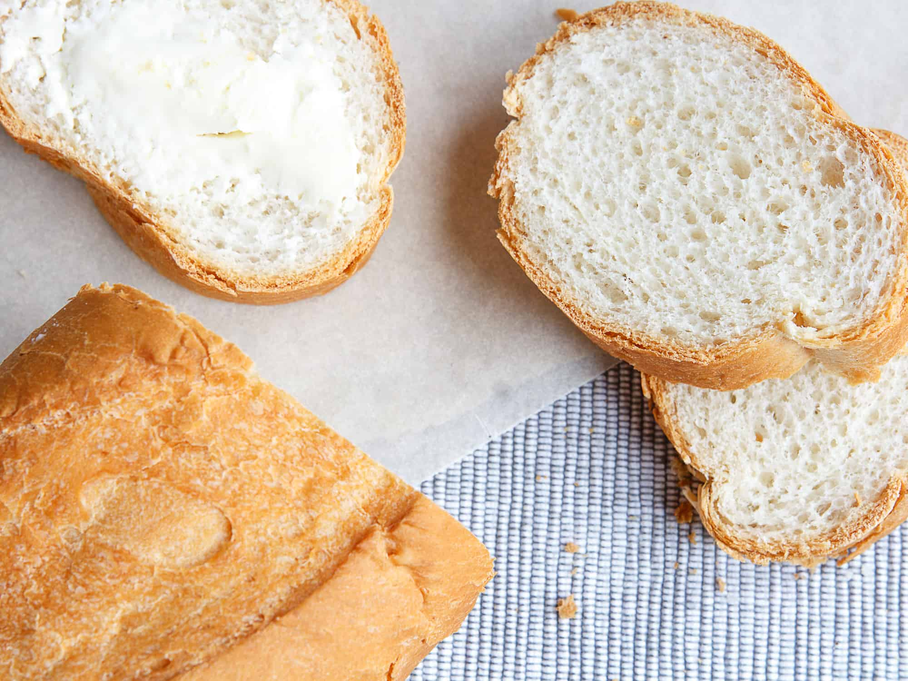

How to Bake Sourdough Bread Using Wild Yeast from Your Local Environment
By: Bella
Introduction to Sourdough Bread
Sourdough bread has been around for centuries, and it's making a comeback in our kitchens today. It's not just a loaf of bread; it's a whole experience that delivers a unique and delicious flavor profile. But what exactly is it?
Sourdough bread is made with a live culture of wild yeast and bacteria that are naturally present in the environment. Unlike store-bought bread, sourdough bread doesn't contain any commercial yeast or preservatives. It makes the bread denser, moister, and more flavorful than other bread.
When you bake with wild yeast, you become part of a tradition that has been practiced for centuries. It's the art of fermentation, and it requires patience, skill, and a little bit of science. It isn't just a process of baking; it's a philosophical and creative approach to food preparation.
The good news is that you don't need a fancy bakery or expensive equipment to make sourdough bread. You can create your own wild yeast starter with just flour, water, and time. Once you've developed your starter, it becomes a living organism that you can use to make bread for years to come.
In our Introduction to Sourdough Bread, we'll dive into the science, tradition, and technique of baking with wild yeast. We'll explore the history of sourdough bread and the health benefits of fermentation. We'll provide step-by-step instructions for creating your own wild yeast starter and tips for maintaining it. And we'll guide you through the process of baking your first rustic sourdough loaf.
So, grab your apron, dust off your mixing bowl, and get ready to experience the magic of sourdough bread baking. With our Introduction to Sourdough Bread, you'll be a master baker in no time.
Finding Wild Yeast
In the world of baking, few things are more satisfying than biting into a freshly-baked loaf of sourdough bread. But did you know that the key ingredient in this tangy bread isn't yeast from a store-bought packet? In fact, the secret to making truly delicious sourdough bread is by using wild yeast that’s unique to your local environment.
But how do you find this precious ingredient? Don't worry; it's easier than you might think. All you need is some basic knowledge of yeast and a bit of patience.
First things first, let's dig into what exactly wild yeast is. Unlike the commercial yeast you see on grocery store shelves, wild yeast is present everywhere, even in the air around us. It’s a natural fungus that helps with fermentation and gives bread its signature taste. The best part? The yeast in your environment is unique to where you live and can produce bread with a distinct flavor profile.
So, how do you capture this wild yeast and use it in your bread-making? The process is called creating a sourdough starter. By simply combining flour and water in a jar and exposing it to the air, you can create an environment that encourages wild yeast to grow and multiply. Over the course of several days, the mixture will start to bubble, indicating that yeast has begun to thrive. With a bit of care and attention, you can maintain your sourdough starter and use it to create delicious loaves of bread.
Not only is baking with wild yeast a fun and rewarding experience, but it also helps connect you with your local environment. Experiment with different flours and water sources to see how they affect your bread, and don't be afraid to get creative with your flavor combinations.
In conclusion, if you want to take your bread-baking to the next level, using wild yeast is the way to go. With a little patience and the knowledge to capture and cultivate it, you’ll be well on your way to crafting delicious sourdough bread with a unique flavor profile that reflects your local environment.
Creating a Starter
Sourdough bread has become a popular staple in many households, and it's not hard to see why. Baking sourdough bread using wild yeast is not only great for the environment, but it also delivers a truly unique, tangy flavor. But before you dive right into baking, you need to create a starter, the foundation of your sourdough bread.
Creating a starter is a simple yet crucial step. It's a mixture of flour and water that captures the wild yeast and bacteria in your local environment, and when it's fed, it will grow and thrive. With patience and attention, you can create a healthy and robust starter that will provide the leavening power needed for your bread.
To create a starter, start by mixing equal parts of flour and water until it forms a thick, pancake-like batter. Cover the mixture with a kitchen towel or cheesecloth and store it in a warm, dark place. After a day or two, you should begin to see some activity, including bubbles and a slightly sour smell.
Now it's time to feed your starter. Discard half of the mixture and add more flour and water to the remaining mixture. Repeat this feeding process every day for at least a week, discarding half of the mixture and feeding the remaining starter with equal parts flour and water. As your starter grows, you may need to increase the amount of flour and water you use.
Your starter is ready when it's doubled in size within a few hours of feeding, has a sour smell, and is bubbling and active. At this point, you can use it to bake your sourdough bread.
Creating a starter is a fascinating process, and it's the key to baking delicious sourdough bread. There are many variations and methods to creating a starter, but the important part is to be patient and observe your mixture's activity. Once you master this step, you'll be well on your way to baking crusty and flavorful sourdough bread that your family and friends will love.
Making the Dough
The ultimate guide to making the perfect sourdough bread dough using wild yeast from your local environment
If you have ever tasted a perfectly crusty, tangy, and chewy sourdough bread loaf, you know that nothing compares to the unique flavor and texture of this beloved artisanal bread. If you are interested in making your sourdough bread from scratch using wild yeast from your local environment, you have come to the right place.
Before you start making your sourdough dough, it is essential to understand the importance of using wild yeast. Unlike commercial yeast, wild yeast contains different microorganisms that give the bread its distinct sour flavor, characteristic texture, and longer shelf life. The use of wild yeast also enhances the nutritional value of the bread by producing vitamins and minerals during the fermentation process.
The first step in making sourdough bread dough using wild yeast is to create a “starter” or “levain.” A levain is a mixture of flour and water, which naturally collects wild yeast and bacteria from the environment. When fed with fresh flour and water, the levain becomes a sustainable culture of wild yeast, ready to be used in the dough.
The next step is to mix the levain with flour, salt, and more water to form the sourdough bread dough. A crucial aspect of making sourdough bread is giving the dough enough time to ferment and rise slowly. This process allows the wild yeast to convert the flour's natural sugars into organic acids, creating the bread's characteristic tang and aroma.
Once the dough has risen adequately, it is time to shape it and bake it in a hot oven until it forms a beautiful, golden crust. The result is a flavorful, chewy, and crusty loaf of sourdough bread that you can be proud of.
In conclusion, making sourdough bread dough using wild yeast from your local environment involves a lot of patience, but the result is worth it. By following the right steps and using quality ingredients, you can create a loaf of bread that will delight your senses and impress your family and friends. So, start your sourdough bread journey today and enjoy the best bread you have ever tasted.
Shaping and Proofing the loaf
Nothing beats the aroma of freshly baked bread wafting through your home, and nothing comes close to the feeling of accomplishment when you bake it from scratch. But when it comes to baking artisan sourdough bread, many people balk at the idea of using wild yeast from their local environment, thinking it is too complicated or risky. Fear not, for we're here to take you step-by-step through the bread-making process and demystify the shaping and proofing of the loaf.
After you have let the dough rest, fermentation will occur, created by the interaction of bacteria and yeast. This is where dough shaping comes into play. Shaping is essential in creating an even crumb, a uniform crust and ensures the loaf has the desired volume. The shaping process begins by dividing the dough into smaller dough pieces that will be shaped into individual loaves.
The final proofing step is crucial in creating the perfect texture and flavor in your sourdough bread. The purpose of the final proof is to give the dough its final rise before baking. You want it to be in the ideal environment, where it is neither too hot nor too cold to allow the yeast to develop equal fermentation throughout the bread.
Everyone's local environment is unique, so it is essential to adjust the final proofing temperature and length based on the dough's maturity, ambient temperature and desired bread texture. Finding the right proofing time and temperature can be a bit of trial and error, but once you nail it, your sourdough bread will be worth the effort.
In conclusion, shaping and proofing the loaf require practice, patience and experimentation to become adept, but the results are worth it. Don't be intimidated by the wild yeast in your environment or the process of baking sourdough bread. With a little practice and the right techniques, anyone can bake a delicious and healthy loaf of artisan sourdough bread.
Baking the Bread
Baking the perfect sourdough bread is an art as much as it is a science. Anyone can make a loaf of bread, but it takes something special to make a truly great one. This guide will show you how to bake sourdough bread using wild yeast from your local environment. With just a few tips and tricks, you can create a delicious and healthy bread that will have your friends and family begging for more.
First, you need to understand the science behind sourdough bread. Sourdough bread is made using a natural leavening agent in the form of a wild yeast. This yeast is found in the air and on the surfaces of grains and fruits, and it is what gives sourdough bread its characteristic tangy flavor. Unlike commercial yeast, which is a single strain that produces a consistent result, wild yeast is a mixed culture, which means that it can produce a wide range of flavors and textures depending on the environment in which it is grown.
To bake sourdough bread, you will need three basic ingredients: flour, water, and salt. Mix these together to create a dough, and then let it rise overnight. In the morning, shape the dough into a loaf and let it rise again. Finally, bake the bread in a hot oven until it is golden brown and sounds hollow when tapped.
The key to making great sourdough bread is to pay attention to the details. Use high-quality ingredients, weigh your ingredients carefully, and give your dough plenty of time to rise. Don't be afraid to experiment with different flours and hydration levels to find the perfect recipe for your local environment. With a little practice and patience, you can bake sourdough bread that is both delicious and healthy.
Storing and Using Starter
Storing and Using Starter: The Key to Amazing Sourdough Bread
For those of us who love the tangy, chewy texture of sourdough bread, there's nothing quite like a freshly-baked loaf straight out of the oven. But what if we told you that you can make sourdough bread from scratch, using only wild yeast from your local environment? That's right – with a little patience, time and some basic ingredients, you too can create a delicious, artisanal sourdough loaf that's sure to impress.
One of the most important steps in sourdough baking is creating and maintaining a starter – a mixture of flour and water that's left to ferment and develop natural yeasts from the environment. Your starter is the key ingredient in all your sourdough baking, so it's important to give it the care and attention it deserves.
Firstly, you need to create your starter. Simply mix equal parts flour and water in a jar or container, loosen the lid and leave in a warm, dark place for a few days, stirring occasionally. The mixture will start to ferment and bubble, creating a natural yeast. Once it's active and bubbly, you can use it to make your first batch of sourdough bread.
But what if you're not ready to bake yet? No problem – you can store your starter in the fridge for up to a week, giving it a feed of fresh flour and water once a week to keep it alive. If you need to store your starter for longer, you can freeze it for up to three months.
When it's time to bake, simply take your starter out of the fridge, give it a feed and wait for it to become active and bubbly again. Then you're ready to mix your dough, let it rise and bake your delicious sourdough bread.
With a little practice, you'll soon be a master at sourdough baking, and your friends and family will be begging for your recipe. So why not give it a try? Your taste buds – and your stomach – will thank you for it.
Tips for Success
Sourdough bread has been on the rise in recent years due to its unique flavor, health benefits, and the satisfaction that comes with making your bread from scratch. However, achieving a perfect loaf of sourdough bread can be tricky, especially if you're using wild yeast from your local environment. If you're new to baking sourdough bread, don't worry! We've got some tips to help you succeed.
Firstly, it's important to understand that sourdough breadmaking is a process that requires patience, practice, and experimentation. Don't be discouraged if your first few loaves don't turn out as expected; there's always room for improvement.
To start, make sure you have a healthy sourdough starter. If you don't have one already, you can make one by mixing flour and water and letting it sit out for a few days until it begins to ferment. Once you have a starter, feed it regularly with flour and water to keep it alive and active.
Next, it's crucial to understand the fermentation process. Sourdough bread dough needs to rise at a slower pace than commercial yeast bread, allowing it to develop flavor and texture. To achieve this, use cooler water and let the dough rise at room temperature for at least 8-12 hours or overnight.
When it comes to baking the bread, make sure your oven is preheated to the correct temperature, usually around 450-500°F. Use a Dutch oven or baking stone to create steam, which will help the bread rise and develop a crispy crust.
In conclusion, making sourdough bread using wild yeast from your local environment is a rewarding and satisfying experience, but it does require some effort and patience. With these tips, you'll be well on your way to baking the perfect sourdough loaf. Happy baking!
Variations and Additions
Baking sourdough bread using wild yeast from your local environment is a time-honored tradition that has recently gained popularity among home bakers. Whether you're an experienced baker or new to the world of sourdough, experimenting with different variations and additions can add a unique twist to your bread and elevate its flavor profile.
One of the benefits of using wild yeast from your local environment is the variety of flavors it can add to your sourdough bread. Factors such as the location, weather conditions, and time of year can all impact the composition of your yeast, leading to subtle differences in taste and texture. For example, if you live in a coastal area, using sea salt in your recipe can give your bread a slight briny flavor. Alternatively, incorporating honey or maple syrup can add a touch of sweetness to your sourdough.
If you're looking to get more creative with your bread-making, there are countless variations and additions you can experiment with. Popular additions include nuts, seeds, and dried fruits, which add texture and flavor to your bread. Adding herbs such as rosemary or thyme can infuse your bread with earthy undertones, while cheese can add a tangy richness to your sourdough.
Another way to switch up your sourdough is by varying the fermentation time. Longer fermentation periods can result in a more tangy, flavorful bread, while shorter ones may result in a softer, sweeter loaf.
Overall, there are endless possibilities when it comes to customizing your sourdough bread. Whether you're looking to experiment with different ingredients or fermentation times, the key is to have fun and embrace the process of baking with wild yeast. So go ahead, try out some variations and additions, and see what unique creation you can come up with!
Conclusion
As you come to the conclusion of your sourdough bread-making journey, you might be feeling like a seasoned baker with newfound skills and knowledge. The process of baking with wild yeast can be rewarding, but it also takes time, patience, and practice. Yet, the result is worth it—sourdough bread that is uniquely yours, with a distinct flavor profile and a crusty, chewy texture.
Throughout this website, we've taken you through the steps of cultivating and maintaining a sourdough starter, mixing and shaping dough, and baking bread in various ways. We've explored the science behind sourdough, discussed the benefits of using wild yeast, and provided tips and troubleshooting advice.
But perhaps even more importantly, we've shown you that baking sourdough bread is a journey—not just a one-time activity. Your starter is a living organism that needs to be fed regularly and cared for. Each loaf you bake is a new opportunity to learn something, to experiment with different flours, hydration levels, and bake times.
As you reach the end of this website, we encourage you to keep exploring, to try new things, and to share your experience with others. Sourdough bread can be a community activity—a way to connect with other bakers, to exchange recipes and tips, and to share the fruits of your labor.
We hope that you've found this website informative, inspiring, and enjoyable. We believe that baking sourdough bread is not just about making food—it's about connecting with a tradition that goes back centuries, and about becoming part of a global community of bakers. So go forth and bake, experiment, and share. And don't forget to savor every bite of that delicious, crispy, tangy sourdough bread.